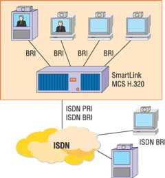
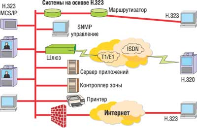
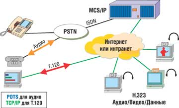

Видеоконференцсвязь - это технология, которая позволяет людям видеть и слышать друг друга, обмениваться данными и совместно их обрабатывать в интерактивном режиме. Первый шаг к созданию подобных систем сделала в 1964 г. компания AT&T, разработавшая аудиовизуальную систему электронного взаимодействия. Это событие принято считать датой рождения видеофона. А уже в конце 1970 гг. появились первые системы видеоконференцсвязи (ВКС), которые сегодня наиболее полно воссоздают атмосферу реального общения.
Вообще говоря, те, кто имеет отношение к системам ВКС, смотрят на них по-разному. С точки зрения оператора любой транспортной сети (LAN, ISDN, Frame Relay, ATM, SDH, xDSL и т. д.), ВКС - это не что иное, как регулярный поток данных, критичный к количеству ошибок сети и потере пакетов. Для оператора связи - это услуга, связанная с предоставлением абоненту широкополосного доступа. Для пользователя - услуги связи, которые он получает в своей корпоративной или общедоступной сети передачи данных, и средство ведения бизнеса; поэтому он требует надежности, удобства и качества связи на уровне привычной телефонии.
В настоящее время системы ВКС широко применяются в таких областях, как управление и бизнес, дистанционное обучение и телемедицина. Именно эти области иллюстрируют традиционное использование ВКС и в России, и во всем мире. Кроме этого, в мировой практике развивается использование ВКС в таких областях, как подбор персонала, телебанкинг (различные системы аутентификации, внедряющиеся из-за участившихся случаев мошенничества с кредитными картами), реклама и маркетинг (для проведения важных презентаций и брифингов для целевых групп клиентов), мониторинг опасных производств. Как показала практика, видеоконференции оказываются незаменимыми для фирм с разветвленной сетью филиалов: для координации управления или эффективного решения текущих бизнес-задач, требующих личного участия сотрудников, в частности, нет никакой необходимости каждый раз отправлять их в дорогостоящие командировки.
За рубежом ВКС используют не только организации, но и отдельные специалисты при выполнении надомных работ. Ожидается, что с повышением уровня экономического развития ВКС будет широко применяться в этих и смежных областях и в нашей стране. Это обусловлено в первую очередь особенностями геополитического строения РФ, размещением различных объектов, передающих информацию друг другу, на больших расстояниях друг от друга. В настоящее время в России системы ВКС, например, успешно применяются при организации корпоративных тренингов, в судебной практике, в военном деле. Видеоконференцсвязь находит достойное применение везде, где необходимы оперативность в анализе ситуации и принятии решения; консультация специалиста или совместная работа в режиме удаленного доступа. Конечно, видеоконференции никогда не заменят личного общения, но они позволяют добиться принципиально нового уровня общения людей, подчас разделенных многими тысячами километров.
Обычно выделяют несколько типовых задач, решаемых ВКС, причем каждая из этих сфер применения имеет свои характерные особенности, которые учитываются при проектировании:
- управление - государственное или производственное (бизнес);
- обучение;
- совместная работа;
- предоставление услуг оператором связи;
- комбинированные варианты.
В настоящее время рынок систем видеоконференцсвязи находится на подъеме. По оценкам аналитиков, к 2007 г. в мире его объем достигнет 10 млрд долл. В настоящее время ежегодный прирост мирового рынка оборудования ВКС находится на уровне 20-25%. По оценкам Wainhouse research (http://www.wainhouse.com), для региона EMEA характерны еще более высокие темпы роста. Отметим, что среди стран региона EMEA Россия представляет собой наиболее динамично развивающийся рынок как по объему продаж, так и по темпам роста (ежегодно увеличивается на 50%).
По оценкам экспертов, высокие темпы роста российского рынка ВКС сохранятся и в дальнейшем, поскольку рост реального сектора экономики, оживление экономической жизни регионов, укрепление системы государственной власти и растущее внимание государства к социальным проблемам и повышению качества жизни населения требует создания систем управления различного назначения и масштаба. Важнейшей технологической основой таких систем уже сегодня стали видеоконференцсвязь и видеотелефония, позволяющие руководителю со своего рабочего места решать любые управленческие задачи, сохраняя привычный стиль общения и резко сокращая время на поездки и командировки.
Прогресс оборудования, снижение его стоимости и возможность использовать как наземную, так и спутниковую телекоммуникационную инфраструктуры привели к тому, что системы ВКС внедряются в коммерческих и бюджетных организациях по всей стране. Как любые современные технологии связи, ВКС стремительно развивается, совершенствуются алгоритмы обработки сигнала, возрастает вычислительная мощность устройств, появляются новые стандарты и решения.
Классификация видеоконференций
В зависимости от уровня оборудования, используемого для систем видеоконференцсвязи, различают персональные, групповые и студийные видеоконференции. Обычно персональные видеоконференции - это некий начальный уровень технологий ВКС. Для их создания требуются относительно недорогие программные или программно-аппаратные средства, применяемые на рабочем месте. Для соединения вполне подойдет и аналоговая телефонная сеть (при отсутствии высоких требований к видеоизображению). Такой тип видеоконференцсвязи можно использовать для неформального общения между двумя лицами, обмена интерактивной информацией, пересылки файлов при небольших затратах времени и финансов. В совместной работе с приложениями применяется "доска объявлений" - специализированное приложение, дающее возможность редактировать текстовый или графический документ всем участникам сеанса связи.
Групповые видеоконференции используются для эффективного общения крупных и средних групп пользователей при совместной работе над проектом, для проведения дискуссий и выступлений, на которых участник не может присутствовать лично. Благодаря высокому качеству сигнала возможны обмен и просмотр документов, групповая работа с приложениями. Для организации групповых видеоконференций требуются старшие модели видеотерминалов, сервер, обеспечивающий взаимодействие групп пользователей, специализированные программные продукты для рабочих станций и сервера, ISDN-соединение или локальная сеть.
Для создания студийных видеоконференций необходимы высококлассное специализированное оборудование (студийные камеры, звуковое и контрольное оборудование, мониторы) и максимальная пропускная способность каналов связи (доступ к каналам спутниковой и оптоволоконной связи). Такие видеоконференции используются для решения задач, требующих максимума возможностей с точки зрения организации обработки информации большим числом людей. Типичный пример таких видеоконференций - телемосты.
По топологии обычно различают два основных типа видеоконференции: "точка-точка" и многоточечные. Конференции "точка-точка" наиболее просты. Они подразумевают соединение только двух рабочих станций напрямую, в то время как многоточечные видеоконференции способны охватывать одновременно несколько десятков пользователей или групп пользователей, но требуют дополнительных затрат на установку и поддержку специализированного устройства - сервера управления многоточечными сеансами.
Все терминалы, участвующие в конференции, устанавливают соединение с сервером, который управляет ресурсами видеоконференции, согласовывает возможности обработки звука и видео для терминалов, определяет аудио- и видеопотоки, которые необходимо направлять по многим адресам. К примеру, если видеоконференцсвязь с несколькими филиалами служит только для передачи распоряжений и приема отчетов в реальном режиме времени, то для этой цели вполне подойдет конференция типа "точка-точка" (достаточно обеспечить каждый филиал и головной офис специализированным терминалом), в то время как для организации совещания с участием представителей всех филиалов требуется многоточечная видеоконференция.
Многоточечные сеансы связи могут проводиться в двух основных режимах - "активация по голосу" и "непрерывное присутствие". В первом режиме все участники сеанса видят говорящего, а говорящий видит предыдущего оратора. Во втором на экран каждому участнику поступает изображение от нескольких других участников. При этом экран разделяется на несколько полей (от двух до 16). Если полей меньше, чем участников, то одно из них может работать в режиме "активация по голосу". И в том и в другом режиме возможен "председательский контроль" - выбор активного терминала, подключение и отключение терминалов администратором видеоконференции. При необходимости включается автоматический режим администрирования с возможностью в любой момент вмешаться в этот процесс.
Безопасность
В условиях высокой конкуренции во многих областях бизнеса передача данных по открытым сетям недопустима - ведь даже минимальная утечка сведений может привести к краху компании. Поэтому при организации видеоконференции на предприятии немаловажную роль играют вопросы защиты информации, особенно при реализации связи с удаленными филиалами по глобальным сетям. В настоящее время на российском рынке имеются программно-аппаратные комплексы криптозащиты, разработанные отечественными специалистами и показавшие в испытаниях достаточно хорошие результаты. В основе такого комплекса обычно лежит криптографический шлюз, гарантирующий сохранность конфиденциальных сведений путем создания защищенных туннелей связи. Эти устройства устанавливаются на входах в локальную сеть компании и обеспечивают шифрование/дешифрование информации с помощью специализированных программных или аппаратных средств. Криптографические комплексы, использующие российские и зарубежные стандарты защиты информации, гарантируют:
- конфиденциальность передаваемых и обрабатываемых данных;
- целостность данных;
- аутентификацию источника данных;
- сокрытие топологии защищаемой сети и ее отдельных сегментов;
- защиту от анализа трафика.
Технические проблемы
Одна из проблем заключается в скорости обработки аудио- и видеопотока, т. е. в эффективном кодировании передаваемых и декодировании получаемых данных в реальном масштабе времени. Дело в том, что в видеоконференциях используются специальные и весьма эффективные алгоритмы сжатия потока в десятки (а подчас и в сотни) раз. Можно сказать, что передаются не сами аудио- и видеосигналы, а только их важнейшие параметры, которые позволяют восстанавливать сигнал на приемном конце с приемлемым качеством. Если принимающая сторона не успевает обрабатывать поток, то появляются пропущенные кадры, сбои в речевом канале и т. п.
Алгоритмы обработки сигнала весьма требовательны к вычислительным ресурсам. Хотя и существуют их чисто программные реализации, однако они требуют значительных ресурсов от базовой платформы ПК. В результате даже на самых современных настольных компьютерах сильно замедляется работа других приложений, да и приемлемое качество видеосвязи получить не удается. Общепринятая мировая практика состоит в использовании аппаратных решений - специализированных систем видеоконференций (кодеков), которые реализуются и как платы, вставляющиеся в свободные слоты ПК, и как функционально законченные решения. Кодеки сжимают сигнал и кодируют его для канала связи (соответственно разжимают его и декодируют на принимающей стороне). Одной из основных тенденций в производстве терминалов для видеоконференцсвязи сегодня стало снижение требований к полосе пропускания за счет применения новых алгоритмов видео- и аудиокомпрессии (H.264, MPEG и т. д.).
Другая важная проблема при передаче аудио- и видеоинформации заключается в том, что канал связи, по которому передается эта информация, должен быть достаточно скоростным, иными словами, обладать высокой пропускной способностью. Обычные телефонные каналы вполне подходят для передачи аудиосигнала, но качественную передачу видеопотока они не обеспечивают. Исторически проведение видеоконференции подразумевало связь между терминалами ВКС по линиям ISDN (цифровая сеть с интеграцией услуг, рис. 1). Использование каналов ISDN, а также других сетей и линий с гарантированным качеством связи - V.35, E1/T1 и т. д. регламентируется серией рекомендаций H.320, разработанных комитетом по стандартизации телекоммуникаций Международного союза электросвязи (ITU-Т).
|  | Рис. 1. Многоточечная видеоконференция в сети ISDN.
|
Однако время не стоит на месте, и в последние годы все более широкое распространение получают видеоконференции, использующие IP-сети, - как локальные (рис. 2), так и территориально распределенные и глобальные (рис. 3). Хотя оборудование и ПО для видеоконференций по IP-сетям (стандарт Н.323) вышли на рынок сравнительно недавно, по прогнозам аналитиков, они вскоре займут главенствующее положение. Так, уже к 2004 г. число развертываний систем ВКС на базе сетей IP в мире превысило аналогичный показатель в сетях ISDN и продолжает увеличиваться. В России эта тенденция наиболее выражена, так как здесь технология ISDN просто не успела занять более или менее прочные позиции. Доказавшая же свою эффективность в корпоративных сетях технология IP-ВКС демонстрирует свои преимущества в глобальном масштабе.
|  |  |
| Рис. 2. Многоточечная видеоконференция в ЛВС.
|
Рис. 3. Многоточечная видеоконференция в распределенной IP-сети.
|
Возможность интеграции ВКС с другими услугами (IP-телефонией, электронной почтой, Web-технологиями и т. д.), уже развернутыми в компаниях, а также доступность и распространенность IP-сетей сыграли решающую роль в выборе потребителей. Желающих строить сети ВКС на базе технологии IP не останавливает даже необходимость приложить определенные усилия (финансовые и технические), чтобы преодолеть недостатки данного варианта - избыточность, нестабильность качества связи, сложности безопасной и удобной стыковки частных и общественных IP-сетей. Компании - разработчики систем ВКС подготовили широкий спектр решений подобных проблем на базе экономичных частных и совместимых с другими производителями открытых протоколов.
Обычно для проведения видеоконференций используются линии с полосой пропускания от 128 кбит/с до 512 кбит/с для ISDN-видеоконференций и до 1-1,5 мбит/с для IP-сетей. Но надо иметь в виду, что для приемлемого качества видео нужны скорости порядка 200 кбит/с, а высококачественное изображение в хороших системах достигается при скоростях около 300 кбит/с и выше. Существует мнение, что IP-системы требуют более широкой полосы пропускания. Это действительно так - из-за особенностей передачи информации в сетях с коммутацией пакетов (добавление заголовков, служебные пакеты протоколов RTCP и т. д.) необходимая полоса пропускания увеличивается на 20-30%. Однако практика показывает, что качество видеоконференции при использовании трех BRI-каналов (384 кбит/с) или IP-канала с шириной около 500 кбит/с приблизительно одинаково.
Стандарты видеоконференций
В 1990 г. был одобрен первый международный стандарт в области видеоконференцсвязи - спецификация H.320 для поддержки видеоконференций по ISDN. Затем ITU одобрил еще целую серию рекомендаций, относящихся к видеоконференцсвязи. Эта серия рекомендаций, часто называемая H.32x, помимо H.320, включает в себя стандарты H.321-H.324, которые предназначены для различных типов сетей: H.321 - ATM B-ISDN, H.323 - ЛВС и Интернет, H.324 - телефонная сеть общего пользования. Стремление использовать сложившуюся структуру IP-сетей привело к появлению в 1996 г. стандарта H.323 (Visual Telephone Systems and Terminal Equipment for Local Area Networks which Provide a Non-Guaranteed Quality of Service - "Видеотелефоны и терминальное оборудование для локальных сетей с негарантированным качеством обслуживания").
Рекомендации ITU для мультимедийных приложений в вычислительных сетях, не обеспечивающих гарантированное качество обслуживания (сети пакетной коммутации IP и IPX на базе Ethernet, Fast Ethernet и Token Ring), предусматривают:
- управление полосой пропускания;
- возможность взаимодействия сетей;
- платформенную независимость;
- поддержку многоточечных конференций;
- поддержку многоадресной передачи;
- стандарты для кодеков;
- поддержку групповой адресации.
Передача аудио- и видеоинформации весьма интенсивно нагружает каналы связи, и, если не следить за ростом этой нагрузки, работоспособность критически важных сетевых сервисов может быть нарушена. Поэтому рекомендации H.323 предусматривают управление полосой пропускания. Допускаются ограничения как числа одновременных соединений, так и суммарной полосы пропускания для всех приложений H.323. Эти ограничения помогают сохранить необходимые ресурсы для работы других сетевых приложений. Каждый терминал H.323 может управлять своей полосой пропускания в конкретной сессии конференции.
Рекомендации H.323 предлагают средство соединения участников видеоконференции в разнородных сетях. Стандарт не привязан ни к каким конкретным технологическим решениям, связанным с оборудованием или ПО. Взаимодействующие между собой приложения могут работать на основе разных платформ, с разными операционными системами. Рекомендации H.323 позволяют организовать конференцию с тремя или более участниками. Многоточечные конференции могут проводиться как с использованием устройства управления многоточечной конференцией, так и без него.
H.323 поддерживает многоадресную передачу в многоточечной конференции, если сеть поддерживает протокол управления групповой адресацией. При многоадресной передаче один пакет информации отправляется всем необходимым адресатам без лишнего дублирования. Многоадресная передача использует полосу пропускания гораздо более эффективно, поскольку всем, кто включен в список рассылки, отправляется ровно один поток. Устанавливаются также регламенты для кодирования и декодирования аудио- и видеопотоков, с тем чтобы обеспечить совместимость оборудования разных производителей. Стоит отметить, что в Н.323 существуют требования, выполнение которых обязательно, и опциональные возможности, при использовании которых также необходимо строго следовать стандарту. Помимо этого, производитель может включать в мультимедийные продукты и приложения дополнительные возможности, если они не противоречат обязательным и опциональным требованиям стандарта. Рекомендации H.323 поддерживают выяснение общих возможностей пользовательского оборудования и устанавливают наилучшие из общих для участников конференции протоколы кодирования, вызова и управления.
В стандарт включено описание терминов "терминал" (terminal), "мультимедиа-шлюз" (gateway), "устройство управления многоточечными конференциями" (Multipoint Control Unit, MCU) и "контроллер зоны", или "привратник" (gatekeeper). Под терминалом понимают оконечное мультимедийное (голос, видео, данные) устройство, предназначенное для участия в конференции. Терминалы должны поддерживать протоколы H.245 - для согласования параметров соединения, Q.931 - для установления соединения и согласования параметров этого соединения, канал RAS (Registration/Admission/Status) для взаимодействия с контроллером зоны, протокол RTP/RTCP для работы с потоками аудио- и видеопакетов, протокол G.711 для сжатия аудиопотока. Согласно рекомендациям, для терминала H.323 опциональна поддержка видеокодеков, протокола T.120 и возможностей MCU.
Мультимедиа-шлюз - это устройство, предназначенное для преобразования мультимедийной и управляющей информации при сопряжении разнородных сетей. Согласно H.323, мультимедиа-шлюз - это опциональный элемент, который может выполнять много разных функций. Типичная его задача - преобразование форматов протоколов передачи (например, H.225.0 и H.221). Обычно мультимедиа-шлюзы служат для поддержки взаимодействия между разнородными сетями.
Устройство управления многоточечными конференциями предназначено для организации конференций между тремя и более участниками. В этом устройстве должен присутствовать контроллер Multipoint Controller (MC) и, возможно, процессоры Multipoint Processors (MP). Контроллер MC поддерживает протокол Н.245 и предназначен для согласования параметров обработки аудио- и видеопотоков между терминалами. Процессоры занимаются коммутированием, микшированием и обработкой этих потоков. Конфигурация многоточечной конференции может быть централизованной, децентрализованной, гибридной и смешанной. Контроллер зоны - это рекомендуемое, но не обязательное устройство, обеспечивающее сетевое управление и исполняющее роль виртуальной телефонной станции. В число основных функций контроллера зоны входят:
- управление вызовами и их адресация;
- обеспечение основными типами обслуживания;
- управление тем, как приложения H.323 используют полосу пропускания, долженствующее обеспечить качество обслуживания;
- управление общим использованием сетевых ресурсов;
- системное администрирование и обеспечение безопасности.
Несмотря на то что H.323 определяет контроллер зоны как необязательный компонент, без него невозможно воспользоваться разнообразным спектром услуг, предусмотренных создателями стандарта H.323 для приложений IP-телефонии и мультимедийных телеконференций.
Современные решения ВКС
Компания Tandberg (http://www.tandberg.net), ведущий поставщик оборудования для видеоконференций, занимается разработкой, производством, поставкой и обслуживанием видеотелекоммуникационных систем более чем в 50 странах мира. Основные отделения Tandberg расположены в Херндоне (США), в Монреале (Канада) и в Осло (Норвегия). Компания обладает значительной долей на европейском, азиатском и тихоокеанском рынках, распространяя свою продукцию через широкую сеть дистрибьюторов и интеграторов. Крупнейшим партнером Tandberg в регионе EMEA (Европа, Средний Восток, Африка) в прошлом году признан российский системный интегратор компания "Энвижн Груп" (http://www.nvisiongroup.ru).
В решениях "Энвижн Груп" находит применение вся линейка оборудования Tandberg. Так, на небольшие групповые системы приходится около 25% оборота этого направления бизнеса компании, на персональные системы - 15%, мобильные системы имеют долю 10%, видеосерверы - 35%, а на ПО и поддержку приходится 15%.
За последнее время "Энвижн Груп" создала более десятка ВКС-систем только на базе оборудования Tandberg (всего же компания реализовала более 150 подобных проектов). Причем каждый проект требует поиска оптимального решения и глубокой экспертизы - как в области оборудования ВКС, так и в том, что касается модернизации, а порой и построения телекоммуникационной инфраструктуры заказчика.
Специалисты "Энвижн Груп" создали и поддерживают русскоязычный информационный портал по технологиям и оборудованию Tandberg (http://tandberg.nvisiongroup.ru/), а также создают для перспективных сегментов рынка типовые системы, позволяющие потенциальным заказчикам увидеть в действии законченное решение своей задачи. Примерами таких систем могут служить мобильные телемедицинские решения для сферы транспорта - передвижной госпиталь на основе железнодорожного состава, рабочее место судового врача, автомобильный комплект и комплект для санитарной авиации.
Оборудование Tandberg
В последнее время чрезвычайно актуальной стала задача создания терминалов ВКС, оптимизированных для мультимедийных применений. Решение этой задачи компания Tandberg воплотила в линейке специализированных продуктов Tandberg MXP Profile. В нее входят две клиентские модели, рассчитанные на использование в крупных и средних переговорных комнатах - MXP Profile 6000 и MXP Profile 3000 соответственно, а также интегрированное настольное решение для индивидуальных пользователей - MXP Profile Set-top Package. Все продукты линейки MXP Profile оснащены широкоэкранной плазменной панелью (или ЖК-дисплеем), обеспечивающей высокое качество визуализации, четкость изображения, хорошую цветопередачу и поддерживающей наиболее эффективное видеоразрешение. Кроме того, встроенные алгоритмы обработки звука, цифровые усилители и акустические системы обеспечивают качественное звучание в широком диапазоне частот. Все устройства семейства Tandberg MXP Profile напрямую подключаются к ПК (через интерфейс DVI), а также к бытовым аудио- и видеоустройствам. Все это расширяет возможности использования видеоконференцсвязи при проведении совещаний с участием руководителей высшего уровня, во время презентаций, в дистанционном обучении.
Продукты семейства Tandberg MXP Profile поддерживают протоколы H.235, H.264, H.323 и получающий все более широкое распространение протокол SIP. Это, с одной стороны, обеспечивает обратную совместимость с практически любым оборудованием ВКС, а с другой - позволяет в качестве основы системы ВКС использовать современные серверные коммуникационные инфраструктуры, готовые к обработке мультимедийного трафика, включая Microsoft Live Communication Server, IBM Lotus Instant Messaging and Web Conferencing (Sametime) и т. д.
Системы ВКС на основе Tandberg Expressway предназначены для организации общения сотрудников территориально распределенных предприятий либо сеансов видеоконференцсвязи между различными организациями. Система ВКС на базе Tandberg Expressway имеет две особенности: во-первых, она позволяет упростить систему нумерации внутри организации, присваивая пользователям вместо цифрового IP-адреса понятные каждому идентификаторы, аналогичные адресам электронной почты (имя@организация.com). Кроме того, в эту систему встроена отсутствующая у других производителей технология сквозной передачи видеоинформации через корпоративные и персональные межсетевые экраны без их перенастройки, которая требовалась до сих пор. Все это упрощает проведение видеоконференций с участием сотрудников разных организаций, а также развертывание систем видеоконференцсвязи на крупных предприятиях, уже создавших инфраструктуру Интернет/интранет и систему информационной безопасности. Высокий уровень безопасности информационного обмена при этом сохраняется. Еще одна отличительная особенность системы - встроенная технология автоматической самонастройки, реагирующая на изменения пропускной способности соединения и обеспечивающая высокий уровень качества за счет передачи только подвижных элементов изображения.
Система видеоконференцсвязи Tandberg Expressway включает в себя абонентские устройства, с которыми работает пользователь, шлюзовые контроллеры (Tandberg Gatekeeper) и контроллеры соединений (Tandberg Border Controller, или TBC), отвечающие, в частности, за передачу трафика через межсетевой экран. В качестве абонентских устройств могут использоваться любые видеотерминалы, поддерживающие стандартный протокол H.323. Контроллер соединений может работать с любыми межсетевыми экранами и устанавливается вне защищенной зоны (например, в демилитаризованной зоне или на площадке провайдера доступа в Интернет).
ВКС в Хабаровском краеОт социальной ответственности региональных администраций и их способности эффективно решать задачи, определяющие текущее состояние региона и перспективы его развития, зависит реальное будущее страны. Спектр таких задач чрезвычайно широк - это и экономические вопросы, и образование, и здравоохранение, и занятость населения, и жилищно-коммунальное хозяйство, и особый круг вопросов, связанный с мобилизацией ресурсов при чрезвычайных ситуациях. Причем для регионов с суровым климатом малейшие задержки в решении этих задач не просто создают неудобства для людей, а порой и ставят под угрозу их жизнь. Соответственно руководителям властных структур на всех уровнях необходимы эффективные средства коммуникаций. Понимая перспективы, открываемые технологией ВКС, администрация Хабаровского края приняла решение развернуть такую систему в своем регионе, сделав ее одним из инструментов управления. Решение этих задач осложнялось слабостью телекоммуникационной инфраструктуры региона и отсутствием сложившейся практики использования систем ВКС в государственном управлении. Соответственно имело смысл отработать в пилотном проекте типовое решение, чтобы впоследствии использовать его для ускорения развертывания сети, снижения затрат и рисков. Именно таким проектом стала система ВКС, связавшая администрации Хабаровского края и Аяно-Майского района. Подчеркнем, что создаваемая сеть должна была решать еще ряд задач, социально важных для региона. Среди них подключение школ к Интернету и краевым образовательным информационным ресурсам, а также повышение качества медицинского обслуживания населения удаленных районов, в первую очередь за счет экстренных медицинских консультаций со специалистами ведущих краевых и всероссийских медицинских учреждений. Не менее значимой для региона стала и возможность "дистанционного" обучения и повышения квалификации медицинских работников. Заказчиком работ по проекту выступил Федеральный центр распределения телерадиопрограмм ФГУП РТРС, а исполнителями - Дальневосточный региональный центр (ДВРЦ) ФГУП РТРС и Дирекция технического развития Федерального центра распределения телепрограмм ФГУП РТРС, "Энвижн Груп" и компания Syrus Systems, ответственная за спутниковое решение в рамках проекта. Компания "Энвижн Груп" была выбрана в качестве системного интегратора проекта, ответственного за создание оптимального технического решения, отвечающего текущим и перспективным задачам проекта. В рамках проекта был создан и введен в эксплуатацию первый участок краевой спутниковой мультисервисной сети, отработана технология ее расширения на другие населенные пункты края. На участках между населенными пунктами используются спутниковые каналы связи, а на участке "последней мили" - различные технологии, выбираемые с учетом особенностей телекоммуникационной инфраструктуры конкретных населенных пунктов. Использование IP-протоколов как основы созданной сети позволило, наряду с сервисами ВКС, сразу же предоставить пользователям целый комплекс дополнительных инфокоммуникационных сервисов. В основу решения было положено современное специализированное видео- и сетевое оборудование компаний Polycom и Cisco Systems. |
Телемедицина
Как уже отмечалось, широкое применение технологии ВКС нашли в медицине и в образовании, сформировав наиболее динамично развивающиеся отрасли телемедицины и телеобразования. При этом российский телемедицинский сегмент, объединяющий десятки медицинских учреждений России и СНГ, уже сегодня позволяет реально повысить качество медицинского обслуживания. Наиболее востребованы телемедицинские решения в удаленных и труднодоступных регионах, а также в медицине катастроф.
Внедрение телемедицинских систем сегодня становится все более обычным делом при информатизации объектов здравоохранения. В первую очередь подобные системы обеспечивают возможности дистанционной диагностики, консультирования, но этим их применение не ограничивается. Сеть видеоконференцсвязи может использоваться для решения следующих задач:
- регулярных телемедицинских консультаций пациентов с удаленными медицинскими центрами;
- удаленного обучения и чтения лекций ведущими медицинскими специалистами страны и мира; дистанционного обучения сотрудников территориально разнесенных подразделений, проведения семинаров и конференций;
- проведения регулярных совещаний руководящего состава и структурных подразделений; участники совещаний общаются с использованием средств аудио- и видеосвязи, нет необходимости собирать их в одном месте;
- мероприятий, связанных с оперативным управлением и принятием решений;
- презентационных и маркетинговых мероприятий.
Некоммерческая Российская ассоциация телемедицины уже несколько лет ведет практическую работу с использованием видеоконференцсвязи. В год проводятся 1500 видеоконсультаций для пациентов из 42 регионов России и стран СНГ, более 800 часов телелекций для врачей по 32 направлениям медицины. Консультации даются по 22 областям медицины, но 60% из них относятся к сердечно-сосудистой хирургии.
В настоящее время ассоциация координирует проект "Москва - регионы России", у истоков создания которого стоял Научный центр сердечно-сосудистой хирургии им. А. Н. Бакулева. Эта система медицинских видеоконференций обеспечивает регулярное проведение телеконсультаций и дистанционного повышения квалификации для ряда субъектов федерации (Республики Мордовия и Саха, Нижегородская, Тюменская области). В качестве консультирующих организаций выступают Центр им. А.Н. Бакулева, Московский НИИ педиатрии и детской хирургии, Российская военно-медицинская академия и другие научные учреждения, в которых работают известные ученые и функционируют центры телемедицины, оснащенные современными средствами связи, что позволяет обеспечить высокий технический уровень видеоконсультаций.
Технологическим партнером Ассоциации телемедицины выступает "Энвижн Груп". Особенность проектов, реализуемых компанией совместно с Ассоциацией российской телемедицины, - обеспечение полного комплекса технических и, главное, организационных мер, позволяющих сразу же начинать использование телемедицинских центров, иными словами, включаться в сеть уже работающих телемедицинских центров, в систему проведения постоянных консультаций и обучения.
В портфеле "Энвижн Груп" сегодня десятки выполненных телемедицинских проектов на всей территории Российской Федерации. В прошлом году на международной научно-практической конференции "Мобильные телемедицинские комплексы. Домашняя телемедицина" компания представила спектр типовых мобильных решений, позволяющих существенно расширить сферу практического использования телемедицины. Проработанные типовые решения построены на базе мобильных терминалов ВКС компании Tandberg: Portable и Tactical II. При этом "Энвижн Груп" опиралась на реальный опыт использования таких устройств в действующих системах ВКС. Использование в терминалах спутниковой связи и возможность подключения к ним различного медицинского, компьютерного и мультимедийного оборудования открывает широкие перспективы для применения телемедицинских решений по всей территории РФ, в том числе в удаленных районах без развитой телекоммуникационной инфраструктуры.
В числе решений "Энвижн Груп", отработанных в реальных телемедицинских проектах, телемедицинский центр, в том числе региональный, региональная телемедицинская сеть, дистанционное обучение, медицинские видеоконсультации, мобильные телемедицинские комплексы и домашняя телемедицина. Одно из представленных решений предусматривает создание подвижных многопрофильных медицинских центров с использованием телемедицинских технологий на базе железнодорожных составов. Такие составы незаменимы при оказании квалифицированной экстренной помощи в районах крупных стихийных бедствий, техногенных катастроф или при иных чрезвычайных ситуациях. Вместе с тем эти центры позволяют проводить масштабные диспансеризации населения, проживающего в сельской местности. Другое решение нацелено на такую важную сферу применения мобильных телемедицинских решений, как морской и речной транспорт. Телемедицинские терминалы необходимы судовым врачам в сложных медицинских случаях, ведь с их помощью можно привлечь для консультаций специалистов из центральных ведомственных госпиталей и любых медицинских учреждений - участников сети Российской ассоциации телемедицины.
Новые сферы применения мобильной телемедицины возникают постоянно. Например, услуги телемедицины и систем ВКС становятся актуальными для владельцев крупных частных катеров и яхт. Ведь применение телемедицинских терминалов на порядок увеличивает безопасность путешествий, позволяет в любой точке мира получать квалифицированные медицинские консультации, поддерживать деловые контакты и связь с родными в режиме видеоконференцсвязи.